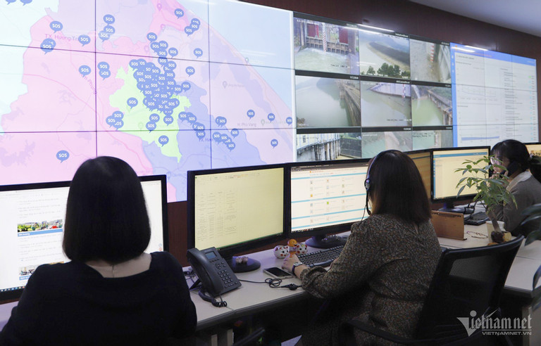

Trong bối cảnh đẩy nhanh tiến trình chuyển đổi số, cũng như các bộ, ngành và địa phương khác, tỉnh Thừa Thiên Huế đặc biệt chú trọng công tác đảm bảo an toàn thông tin mạng.
Nhiều nhóm nhiệm vụ về đảm bảo an toàn thông tin mạng đã được tỉnh tập trung triển khai thời gian qua, như: Tổ chức thực thi, đôn đốc, kiểm tra, giám sát công tác bảo đảm an toàn thông tin theo mô hình 4 lớp; xây dựng, ban hành quy định, quy trình, kế hoạch và chính sách về bảo đảm an toàn thông tin mạng; phòng, chống phần mềm độc hại; tổ chức diễn tập, phối hợp ứng cứu, kiểm tra, đánh giá, xử lý sự cố an toàn thông tin mạng...
Để bảo vệ được thành quả của công cuộc chuyển đổi số, vấn đề đào tạo và phát triển nguồn nhân lực an toàn thông tin, nâng cao nhận thức và kỹ năng an toàn thông tin mạng được xác định là một trong những nhiệm vụ quan trọng hàng đầu.

Theo Sở TT&TT tỉnh Thừa Thiên Huế, trong năm nay, tỉnh đã tổ chức đào tạo chuyên sâu các kỹ năng về an toàn thông tin cho 35 học viên là cán bộ chuyên trách CNTT các sở, ban, ngành, huyện, thị xã, thành phố trên địa bàn.
Đồng thời, cử nhân sự tham gia 8 khóa đào tạo cho cán bộ vận hành hệ thống, kỹ năng bảo mật và xử lý các sự cố về an toàn, an ninh mạng do các đơn vị thuộc Bộ TT&TT là Cục An toàn thông tin, Trường Đào tạo, bồi dưỡng cán bộ quản lý TT&TT tổ chức.
Song song đó, địa phương này cũng đã tổ chức 14 lớp đào tạo nâng cao kiến thức, kỹ năng về an toàn thông tin cho 517 học viên là lãnh đạo và cán bộ, công chức, viên chức của 7 huyện, thị xã trên địa bàn tỉnh.
Các phóng sự, clip, infographic, cẩm nang tuyên truyền, hướng dẫn nhằm nâng cao nhận thức, kỹ năng về an toàn thông tin cho cán bộ, công chức, viên chức và người dân của tỉnh cũng đã được Thừa Thiên Huế tổ chức thực hiện, tiêu biểu như: phóng sự truyền hình về an toàn thông tin trên nền tảng dùng chung Hue-S, clip cảnh báo các thủ đoạn lừa đảo trực tuyến và phương thức phòng tránh; phát hành 7.000 cẩm nang hướng dẫn kỹ năng về an toàn thông tin...
Ngoài ra, Thừa Thiên Huế còn tổ chức tọa đàm, mời báo cáo viên chia sẻ kỹ năng đảm bảo an toàn thông tin khi sử dụng mạng Internet, mạng xã hội và các thiết bị thông minh.
Nhận định một tồn tại, hạn chế trong đảm bảo an toàn thông tin tại tỉnh Thừa Thiên Huế là nguồn nhân lực còn mỏng và chưa đáp ứng được các yêu cầu, nhiệm vụ ngày càng cao, Sở TT&TT tỉnh Thừa Thiên Huế cho biết, thời gian tới, Huế sẽ tiếp tục tập trung đào tạo chuyên sâu các kỹ năng về an toàn thông tin cho bộ phận cán bộ chuyên trách, bán chuyên trách về an toàn thông tin.
Cùng với đó, sẽ tiếp tục tổ chức đào tạo nâng cao kiến thức, kỹ năng cho đội ngũ lãnh đạo, cán bộ, công chức viên chức trên địa bàn tỉnh; tích cực tham gia các khóa đào vận hành hệ thống, kỹ năng bảo mật và xử lý các sự cố về an toàn, an ninh mạng do trung ương tổ chức theo chương trình “Đào tạo và phát triển nguồn nhân lực an toàn thông tin giai đoạn 2021 - 2025”.
Một việc khác cũng sẽ được chú trọng thời gian tới là hoàn thiện xây dựng rà soát các yêu cầu tiêu chí số 5 về an toàn thông tin tại bộ chỉ số đánh giá chuyển đổi số - DTI cấp tỉnh theo hướng dẫn của Bộ TT&TT; các tiêu chí đánh giá giải pháp, dịch vụ Trung tâm giám sát điều hành an toàn, an ninh mạng - SOC; 13 tiêu chí đánh giá an toàn thông tin được Bộ TT&TT hướng dẫn kỹ thuật trong triển khai Đề án 06 cho các Hệ thống thông tin của tỉnh để phục vụ kết nối Hệ thống định danh, xác thực điện tử; đảm bảo tiện lợi nhất cho người dân, doanh nghiệp tham gia Hệ thống thông tin, đồng thời phục vụ công tác chỉ đạo, điều hành của UBND tỉnh.
Rà soát đánh giá sự trưởng thành của đội ứng cứu sự cố an toàn thông tin mạng tỉnh Thừa Thiên Huế theo “Mô hình đánh giá mức độ trưởng thành của đội ứng cứu sự cố an toàn thông tin mạng” đã được Bộ TT&TT ban hành trung tuần tháng 10/2023.
Việc này nhằm thể hiện mức độ phát triển của đội ứng cứu sự cố an toàn thông tin mạng của tỉnh khi triển khai đồng bộ các công tác tổ chức, quản trị, xây dựng hồ sơ, văn bản, tài liệu, hoạt động thực thi và đo lường chức năng, nhiệm vụ của đội ứng cứu sự cố an toàn thông tin mạng tỉnh.
Năm nhóm chỉ số thành phần cần bảo đảm gồm chỉ số đánh giá về tổ chức, chỉ số đánh giá về con người, chỉ số đánh giá về công cụ, chỉ số đánh giá về quy trình, và chỉ số đánh giá hoạt động thường xuyên.
Thời gian tới, tỉnh Thừa Thiên Huế còn tập trung đầu tư nâng cấp hạ tầng số đáp ứng chương trình chuyển đổi số và phát triển các dịch vụ đô thị thông minh giai đoạn 2021 - 2025, định hướng 2030.
Mục tiêu đặt ra là nhằm nâng cao hiệu lực, hiệu quả hoạt động của bộ máy hành chính nhà nước và chất lượng phục vụ người dân, doanh nghiệp; phát triển chính quyền điện tử tỉnh dựa trên dữ liệu và dữ liệu mở hướng tới hình thành chính quyền số; đáp ứng yêu cầu phát triển các dịch vụ đô thị thông minh.